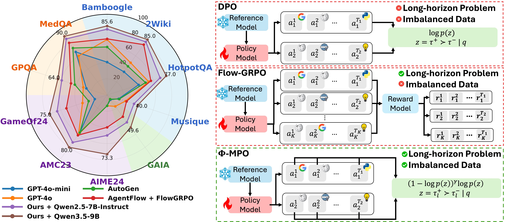
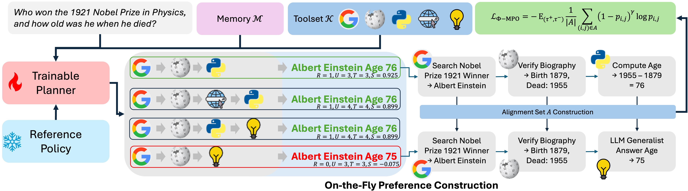
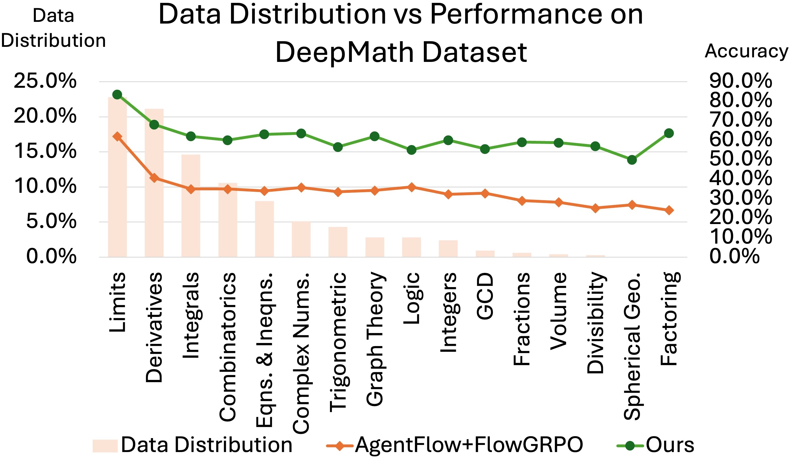
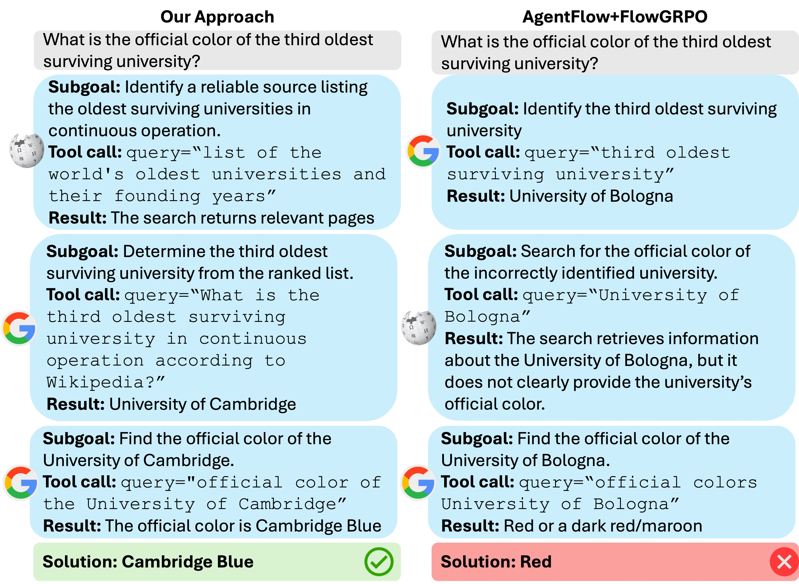

- Multi-level preference learning: combine trajectory-level preferences with aligned state-level comparisons to improve credit assignment over long reasoning horizons.
- Fairness under data imbalance: focal weighting reduces the influence of frequent, easy pairs and preserves learning from hard, informative reasoning decisions.
- Theoretical analysis: characterize the shared pairwise optimization direction of DPO and GRPO under the paper’s assumptions, and show how the fair objective suppresses easy-majority dominance.
- Strong results across four task families: Φ-MPO improves accuracy over Flow-GRPO on all ten reported benchmarks with the Qwen2.5-7B-Instruct backbone.
Φ-MPO Fair Multi-Level Preference Optimization
Agentic Multi-Turn Reasoning:
A Fairness Approach
1CVIU Lab, University of Arkansas
2Department of Physics, University of Arkansas
3Department of Geosciences, University of Arkansas
4Carnegie Mellon University
Accepted to NeurIPS 2026

Highlights
Abstract
Recent advances in Large Language Models (LLMs) have enabled agentic systems capable of solving complex tasks through multi-turn planning, tool use, verification, and memory updates. However, learning agentic systems remains difficult due to two fundamental challenges, i.e., (1) long-horizon credit assignment, where supervision is available only at the final outcome, and (2) imbalanced data distributions, where dominant data patterns bias optimization and weaken adaptation to rare but informative reasoning behaviors. In this paper, we propose Fair Multi-Level Preference Optimization (Fair-MPO or Φ-MPO), a new preference optimization framework for agentic learning. We first show that Multi-Level Preference Optimization provides a principled and more computationally efficient framework for long-horizon reasoning. Then, we introduce a Fair Multi-Level Objective that addresses imbalance in agentic learning. We provide a comprehensive theoretical analysis demonstrating that our approach addresses both long-horizon reasoning and data imbalance. Our experiments on agentic reasoning benchmarks demonstrate that our approach achieves State-of-the-Art (SOTA) performance.
The Φ-MPO Framework
The agent coordinates an Action Planner, Tool Executor, Execution Verifier, and Solution Generator through shared, evolving memory. Φ-MPO trains the planner from preferences over both complete trajectories and aligned intermediate reasoning states.


From final outcomes to intermediate decisions
Trajectory-level DPO encourages successful complete rollouts. Multi-Level Preference Optimization adds comparisons between semantically aligned states in preferred and dispreferred trajectories, providing denser supervision for planning and tool use.
Balancing easy and hard preference pairs
The fair objective weights each aligned pair by (1 − p)γ, where p is its preference probability. This suppresses easy pairs that already have high preference probability. At γ = 0, the objective reduces to standard MPO; the experiments use γ = 2.
Why Data Imbalance Matters
Topics, difficulty levels, and reasoning patterns occur at uneven frequencies in agentic training data. Dominant patterns produce many redundant trajectories, while successful rollouts for rare or difficult cases remain scarce. Φ-MPO addresses this imbalance during preference optimization.


Experimental Results
Evaluation spans knowledge-intensive search, agentic reasoning, mathematical reasoning, and scientific reasoning. With Qwen2.5-7B-Instruct, Φ-MPO reaches 81.6% on Bamboogle, 41.7% on GAIA, 50.0% on AIME24, and 86.0% on MedQA.
| Method | Backbone / size | Bamboogle | 2Wiki | HotpotQA | Musique | GAIA |
|---|---|---|---|---|---|---|
| Qwen2.5-7B-Inst | 7B | 12.0 | 23.0 | 21.0 | 6.0 | 3.2 |
| Qwen2.5-14B-Inst | 14B | 21.6 | 26.7 | 20.0 | 8.0 | 5.5 |
| Qwen2.5-32B-Inst | 32B | 24.0 | 26.7 | 27.0 | 6.0 | 9.5 |
| Llama-3.3-70B-Inst | 70B | 18.4 | 22.7 | 52.0 | 16.0 | 3.2 |
| GPT-4o-mini | — | 40.8 | 35.6 | 41.0 | 15.0 | 7.1 |
| GPT-4o | — | 68.8 | 49.5 | 54.0 | 24.0 | 17.3 |
| SFT | 7B-Inst | 12.0 | 25.9 | 22.0 | 6.6 | 3.2 |
| Iter-RetGen | 7B-Inst | 36.8 | 33.6 | 37.4 | 17.8 | 3.9 |
| Search-R1 | 7B-Inst | 43.2 | 38.2 | 37.0 | 14.6 | 19.1 |
| ZeroSearch | 7B-Base | 27.8 | 35.2 | 34.6 | 18.0 | 16.5 |
| ReSearch | 7B-Base | 42.4 | 47.6 | 43.5 | 22.3 | 17.3 |
| StepSearch | 7B-Base | 40.0 | 36.6 | 38.6 | 22.6 | - |
| VerlTool | 7B-Base | 46.4 | 45.3 | 44.8 | 19.3 | 11.2 |
| AutoGen | 7B-Inst | 59.6 | 44.0 | 50.0 | 15.9 | 6.3 |
| AgentFlow | 7B-Inst | 58.4 | 60.0 | 51.3 | 19.2 | 17.2 |
| FlowGRPO | 7B-Inst | 69.6 | 77.2 | 57.0 | 25.3 | 33.1 |
| Φ-MPO | 7B-Inst | 81.6 | 81.5 | 69.0 | 35.0 | 41.7 |
| Φ-MPO | Qwen3.5-9B | 85.6 | 85.0 | 77.0 | 40.0 | 49.6 |
| Method | Backbone / size | AIME24 | AMC23 | GameOf24 | GPQA | MedQA |
|---|---|---|---|---|---|---|
| Qwen2.5-7B-Inst | 7B | 6.7 | 47.5 | 33.0 | 34.0 | 66.0 |
| Qwen2.5-14B-Inst | 14B | 6.7 | 60.0 | 25.0 | 31.0 | 75.0 |
| Llama-3.3-70B-Inst | 70B | 6.7 | 47.5 | 31.0 | 35.0 | 67.0 |
| Llama-3.1-405B-Inst | 405B | 26.7 | 47.5 | 23.0 | 30.0 | 62.0 |
| GPT-4o-mini | — | 13.3 | 57.5 | 16.0 | 27.0 | 66.0 |
| GPT-4o | — | 13.3 | 60.0 | 32.0 | 31.0 | 60.0 |
| SFT | 7B-Inst | 6.7 | 47.5 | 33.0 | 34.0 | 66.0 |
| SimpleRL | 7B-Base | 16.7 | 60.0 | 33.0 | 45.0 | 65.0 |
| Open-Reasoner | 7B-Base | 16.7 | 54.9 | 32.0 | 34.0 | 54.0 |
| General-Reasoner | 7B-Base | 13.3 | 55.0 | 33.0 | 35.5 | 61.0 |
| Luffy | 7B-Inst | 30.7 | 44.8 | 33.0 | 34.0 | 77.0 |
| TIR | 7B-Inst | 10.0 | 50.0 | 33.0 | 42.0 | 76.8 |
| ToRL | 7B-Inst | 20.0 | 60.0 | 31.0 | 35.0 | 76.5 |
| AutoGen | 7B-Inst | 13.3 | 57.5 | 24.0 | 42.0 | 72.0 |
| AgentFlow | 7B-Inst | 16.7 | 47.4 | 31.0 | 37.0 | 76.0 |
| Flow-GRPO | 7B-Inst | 40.0 | 61.5 | 53.0 | 47.0 | 80.0 |
| Φ-MPO | 7B-Inst | 50.0 | 72.5 | 65.0 | 59.0 | 86.0 |
| Φ-MPO | Qwen3.5-9B | 73.3 | 80.0 | 75.0 | 64.0 | 90.0 |
All accuracy values are reproduced from the paper. 7B-Inst: Qwen2.5-7B-Instruct; 7B-Base: Qwen2.5-7B-Base. A dash indicates an unreported score or an omitted proprietary model size. Tables scroll horizontally on smaller screens.
What Each Objective Contributes
Adding multi-level supervision improves trajectory-level DPO. Adding the fairness objective improves accuracy further on all four ablation benchmarks.
| Training objective | Bamboogle | 2Wiki | GAIA | AIME24 |
|---|---|---|---|---|
| Trajectory-level DPO | 61.6 | 61.5 | 21.3 | 30.0 |
| + Multi-level preferences (MPO) | 76.0 | 76.0 | 36.2 | 43.3 |
| + Fairness weighting (Φ-MPO) | 81.6 | 81.5 | 41.7 | 50.0 |
Multi-Turn Reasoning in Action


BibTeX
@inproceedings{truong2026agentic,
title={Agentic Multi-Turn Reasoning: A Fairness Approach},
author={Truong, Thanh-Dat and Pandey, Sankalp and Churchill, Hugh and
Cothren, Jackson and Savvides, Marios and Luu, Khoa},
booktitle={Advances in Neural Information Processing Systems},
year={2026}
}